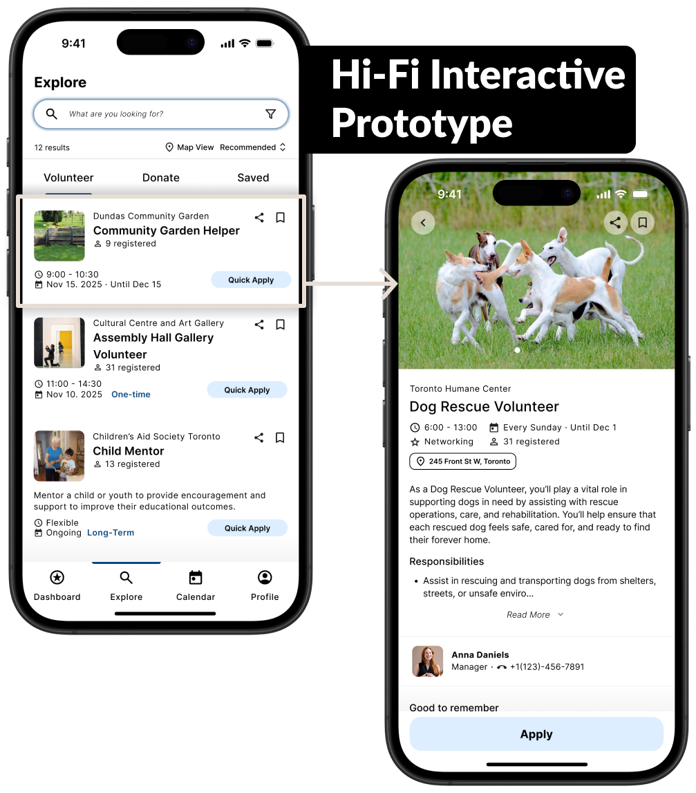
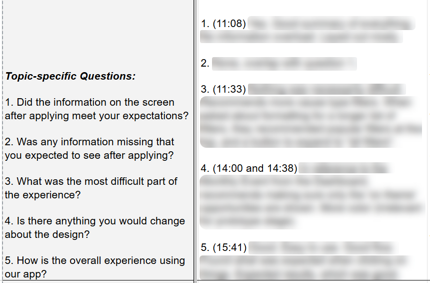
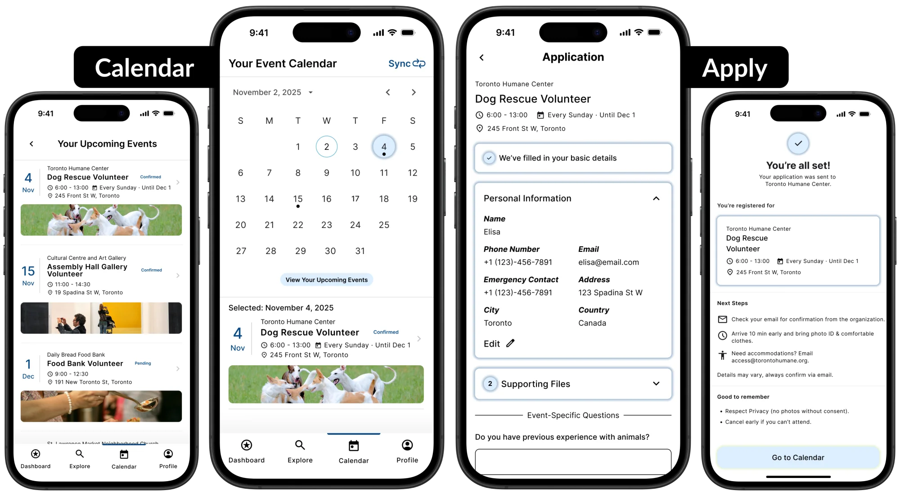
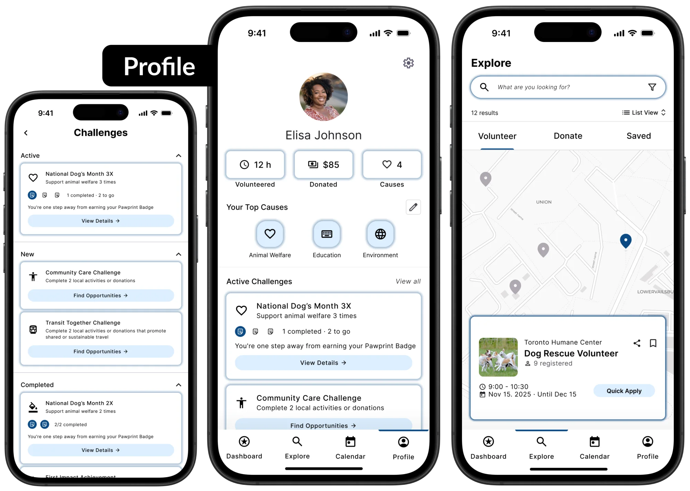

UofT · UX Research & Design
WeAct
Reimagining Local Volunteering
Making local volunteering easier to find and commit to.
Open Full Case Study

The Problem
Locals want to volunteer, but can't easily find opportunities that fit their schedules, interests, and life-goals.
My Role
- UX Research
- UX/UI Design
- Insight Synthesis
- Workflow Simplification
- Wireframing
- Prototyping
- Testing
- Iteration
- Collaboration
Research, Synthesis and Ideation...
- Comparative/Competitor Analysis
- Pain Points & Motivations
- Journey Mapping
- Personas
- User Interviews

People are Very Busy...
In both our primary and secondary research, time constraints were the dominant barrier to motivation and engagement with local causes.


Insights to Design...
We wanted to ensure that our users were heard, so we took our data and collaborated to design the best outcomes.
- Opportunities rarely align with schedule/location.
- Applying takes too long and has too much repetition.
- Users struggle to see the impact of their contributions.
- Scheduling reminders are fragmented and tiresome.

Prototyping...
Iteration based on research, ideation and feedback.


Testing...
Prior to the final Hi-Fi prototype, each group member conducted 2 Usability Testing sessions while observing an additional session whilst taking notes.

Key Outcomes & Deliverables...
Hi-Fidelity deliverables — created by me.

What Was Solved?
- Opportunities to get involved are now easy to find and sign-up for.
- Reduction in friction from the application process.
- Volunteers can now commit to opportunities, schedule them with ease, and track their impact with confidence.

Skills Built & Reflection...
I am proud to have worked on a project focused on community wellbeing and encouraging people to support one another.
Skills Built...
- Research & Insight Synthesis
- Interviewing, testing, pattern extraction, and forming actionable insights.
- User-Centered Design
- Translating needs and pain points to direction and flows.
- Interaction Design
- Reducing friction, clarifying navigation, and designing efficient flows.
- Collaboration and Communication
- 2 presentations, skill sharing, meetings, and project collaboration.
- Design Tools
- Figma — prototyping, wireframes, components and assets.
Things I Learned...
- How to balance user needs with real-world constraints, both in terms of organizational factors (such as time and expectations) and practical limitations (such as technical feasibility and scope).
- Grounding decisions in solid evidence.
Challenges...
- Balancing different user needs and assigning priorities, such as focusing more on discovery layout over impact visualization.
Improvements for Next Time...
- Conduct usability testing earlier to determine a better prioritization order.
- Expand the diversity of testing participants to catch edge cases.